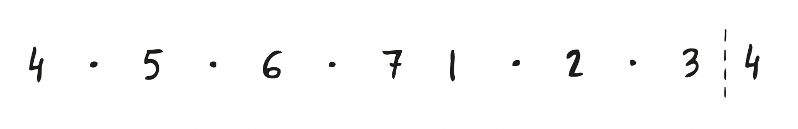

4th harmonic env
Modern

key of A (note 4 = D)
key of Ab (note 4 = Db )
key of B (note 4 =E )
key of Bb (note 4 = Eb)
key of C (note 4 = F)
key of D (note 4 = G)
key of Db (note 4 = Gb)
key of E (note 4 = A)
key of Eb (note 4 = Ab)
key of F (note 4 = Bb)
key of G (note 4 = C)
key of Gb (note 4 = B)